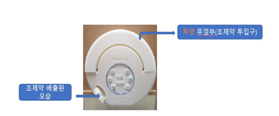

자동약제배출장치(조제약) -자동으로 두루마리 형태의 조제약이 설정값에 따라 회전방식에 의해 배출되는 기계장치로 최대 30일 조제약 보관이 가능하며 항정신성의약품의 경우 단순 배출뿐만아니라 복용량 제한의 기능도 수행하여 향정신성의약품 오남용 위험 성을 줄이는 기능이 추가되어 있으며 조제약 배출장치 또한 기존의 헬스모니 터링 시스템(생체정보)와 복약알림 APP과 데이터가 연동하도록 설계됨 